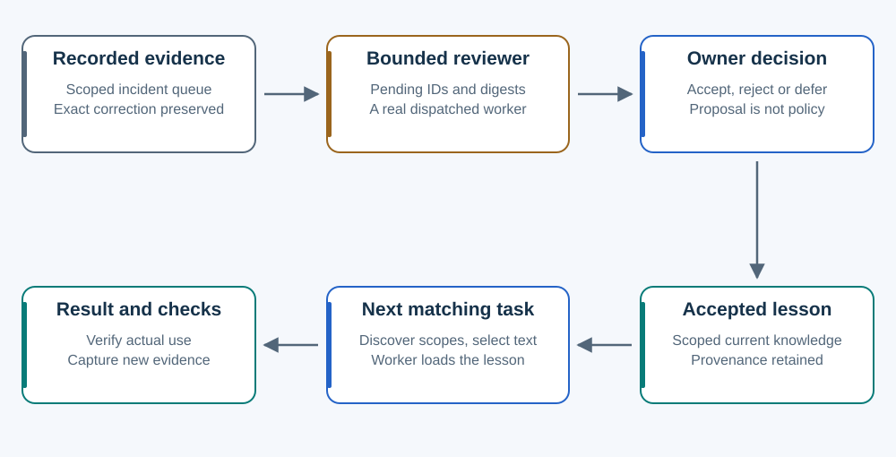

Learning lives in canonical history.
A bounded review needs recorded evidence, real execution and an owner decision—not a second state file or magical memory.

The active-session loop
The owner records meaningful incidents alongside ordinary checkpoints as typed canonical request notes. At meaningful evaluation or closure, three pending incidents make one review due when permitted capacity exists. That batches spending; the incidents need not share a cause. Default review selection is at most five incidents and 12,000 returned bytes.
The Director actually dispatches one bounded worker with the selected incident IDs/digests and scoped sources. The complete output and proposals are saved together in one canonical review note. Successfully reviewed IDs are derived from that immutable history; there is no separate mutable cursor or state.json. Failed or interrupted saves leave evidence pending.
The owner evaluates explicitly typed proposals. Only accepted knowledge proposals and source-backed rule entries reach task selection; hypotheses cannot become rules. Accepted routing or structure proposals still require authorized implementation and a changed discovery path. Acceptance itself creates no department or file change. Older untyped proposals remain byte-preserved, visible and quarantined for classification; they are not silently promoted into rules. A later worker discovers canonical scopes, reads the applicable accepted entries for its actual affected files, uses them and returns checks. Unknown settings and spend remain unknown. If capacity is unavailable, a canonical note retains the real deferral reason and next active opportunity.
An explicit instruction applies now
A source-backed user rule need not wait for three incidents or a reviewer. Record a rule note for that already authorized scope; do not broaden it from repetition. Current knowledge can be retired explicitly while history stays intact.
python3 .director/canonical_learning.py pending --data-file query.json
python3 .director/canonical_learning.py selectors --data-file query.json
python3 .director/canonical_learning.py select --data-file matching.jsonThe canonical pattern/starter/payload/LEARNING.md specifies bounded pages, source/revision checks and append kinds. Existing trackers need their own verified adapter; do not run this backend against a predecessor format.
Touched role/runbook/artifact upkeep is a separate closure duty even when no learning review is due. Preserve dated reasons, correct stale current pointers and check their next relevant use.